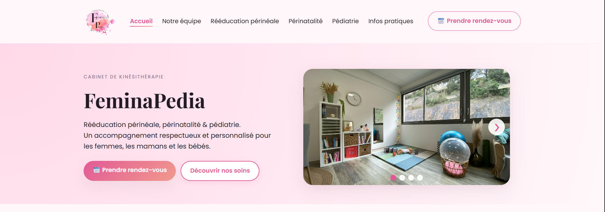

Feminapedia

Site vitrine réalisé pour deux kinésithérapeutes : pages de présentation, services, prise de contact via formulaire, et optimisation responsive. Le design met l'accent sur la lisibilité, l'accessibilité et la conversion des visiteurs en patients.
Stack technique
Frontend
HTML5
Structure sémantique
CSS3
Responsive & animations
JavaScript
Formulaire & validations
Accessibilité
WCAG basics: labels, focus states, contrast, semantic landmarks.
Fonctionnalités
Pages
- • Accueil & bio des praticiens
- • Services & tarifs
- • Blog / actualités (simple)
- • Formulaire contact avec envoi mail
Formulaire
Formulaire de prise de contact avec validation JS, gestion des erreurs et message de confirmation. Peut être relié à un back-end ou service email.
Ce que j'ai appris
Design orienté conversion
Optimiser l'information pour faciliter la prise de contact et rassurer le patient (témoignages, process, accès rapide au formulaire).